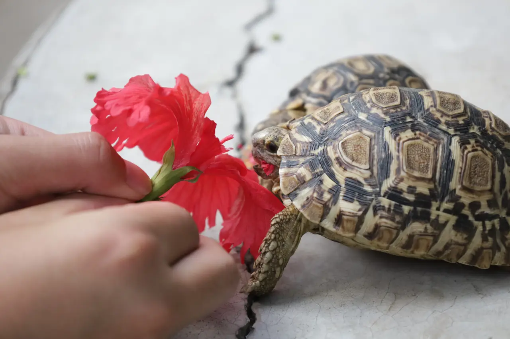

← Retour au studio
Carnet 02 · Mpumalanga
Kruger & beyond.
La vie sauvage du parc Kruger, des centres de conservation et les reliefs spectaculaires de Bourke’s Luck.
Voir les 161 photosQuatre regards
La collection
Chargement de la collection…